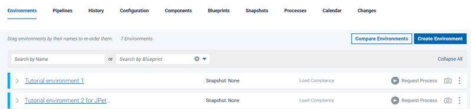

Lesson 2: Creating an environment
Environments are deployment targets for the application components that you specify. You create another environment in the application's delivery pipeline to facilitate multiple active applications. You apply an agent resource and specify which components the agent resource deploys.
Before you begin
Online, as in the
following figure:
About this task
Procedure
Results

With the environment prepared and the agent running, you can run the application process on the environment to deploy the components that you specified in the snapshot.What to do next
In this lesson, you added an environment to the application
In the previous tutorial, you proved that the components in the first environment are compatible and complete. You can use the snapshot that you created to quickly promote all the components to the new environment. Your delivery pipeline might include deploying an application to testing and quality assurance servers before you deploy it to a production server. By using a snapshot, you can ensure that you quickly and correctly select all the right component versions as you move an application through the delivery pipeline.